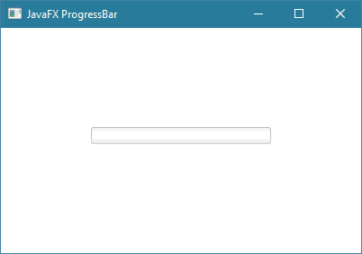
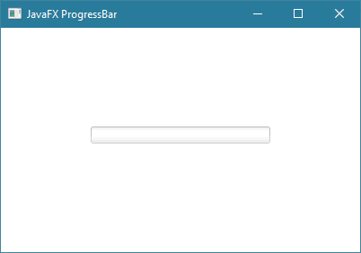
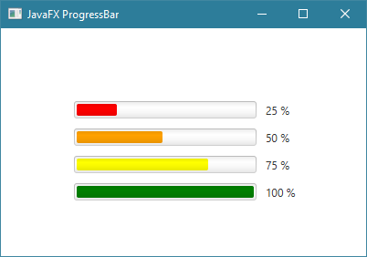
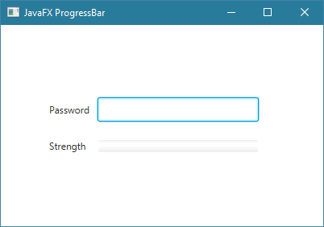

JavaFXالكلاس ProgressBar
مقدمة
الكلاس ProgressBar يستخدم لإضافة Progress Bar في واجهة المستخدم.
الـ Progress Bar يستخدم في العادة للأسباب التالية:
لجعل المستخدم يدرك أن عليه الإنتظار قليلاً حتى يتم تنفيذ شيء معين.
لجعل المستخدم يدرك كم سيستغرق إجراء عملية معينة. مثل عند نسخ ملف أو تحميل ملف من النت.
لجعل المستخدم يدرك كم بقي معه وقت حتى ينهي شيء معين. مثل في حال إنشاء برنامج إختبار.
لجعل المستخدم يدرك كم خطوة بقي عليه لإنهاء شيء محدد.
لجعل المستخدم يدرك مدى قوة كلمة السر التي أدخلها.
بناء الكلاس ProgressBar
public class ProgressBar
extends ProgressIndicator
مصطلحات تقنية
الـ ProgressBar الذي له قيمة محددة كما في الصورة التالية يسمى Determinate Progress Bar.
الـ ProgressBar الذي ليس له قيمة محددة كما في الصورة التالية يسمى Indeterminate Progress Bar.
طريقة التعامل معه
للحصول على Progress Bar, يجب إنشاء كائن من الكلاس ProgressBar.
عند تحديد قيمة الـ ProgressBar يجب وضع رقم بين 0 و 1 و هذا سيمثل بدوره النسبة المئوية لإكتمال الخط الذي يظهر في الـ ProgressBar. و إليك بعض الأمثلة:
لتغيير لون كائن الـ ProgressBar نستخدم الدالة setStyle() و نغيير قيمة خاصية إسمها -fx-accent.
في حال قمت بإنشاء كائن من الـ ProgressBar و لم تقم بتحديد قيمته الأولية أو قمت بوضع قيمة أصغر من 0 كقيمة له أولية مثل 1- فإنه سيظهر كـ Indeterminate Progress Bar.
كونستركتورات الكلاس ProgressBar
الجدول التالي يحتوي على كونستركتورات الكلاس ProgressBar.
| الكونستركتور مع تعريفه |
public ProgressBar()
ينشئ كائن من الكلاس ProgressBar يمثل Indeterminate Progress Bar. |
public ProgressBar(double progress)
ينشئ كائن من الكلاس ProgressBar يمثل Determinate Progress Bar مع تحديد القيمة الأولية التي ستظهر فيه.
مكان الباراميتر value نضع القيمة التي نريدها أن تظهر فيه بشكل إفتراضي عند تشغيل البرنامج. |
دوال الكلاس ProgressBar
الجدول التالي يحتوي على دوال الكلاس ProgressBar الأكثر إستخداماً.
| الدالة مع تعريفها |
public final void setProgress(double value)
تستخدم لتحديد قيمة كائن الـ ProgressBar الذي قام بإستدعائها.
مكان الباراميتر value نضع القيمة الجديدة و التي يجب أن تكون بين 0 و 1.
إذا وضعت قيمة بين 0 و 1 فإنه سيظهر كـ Determinate Progress Bar قيمته تمثل نسبة مئوية. فمثلاً إذا وضعت إذا وضعت 0.40 فهذا يمثل 40%. إذا وضعت قيمة أصغر من 0 فإنه سيظهر كـ Indeterminate Progress Bar. إذا وضعت قيمة أكبر من 1 فإنه سيظهر كـ Determinate Progress Bar قيمته تساوي 100%.
|
public final double getProgress()
ترجع قيمة كائن الـ ProgressBar الذي قام بإستدعائها كرقم نوعه double. |
public final void setTranslateX(double value)
تستخدم لتحديد مكان كائن الـ ProgressBar الذي قام باستدعائها أفقياً.
مكان الباراميتر value نضع رقم يمثل كم Pixel سيتم إزاحته من اليسار إلى اليمين. |
public final void setTranslateY(double value)
تستخدم لتحديد مكان كائن الـ ProgressBar الذي قام باستدعائها عامودياً.
مكان الباراميتر value نضع رقم يمثل كم Pixel سيتم إزاحته من الأعلى إلى الأسفل. |
public void setPrefSize(double prefWidth, double prefHeight)
تستخدم لتحديد حجم كائن الـ ProgressBar الذي قام باستدعائها.
|
public final void setVisible(boolean value)
تستخدم لإظهار أو إخفاء كائن الـ ProgressBar الذي قام باستدعائها في النافذة.
مكان الباراميتر value نضع القيمة true لإظهاره, و نضع القيمة false لإخفائه. |
public final void setDisable(boolean value)
تستخدم لجعل نص كائن الـ ProgressBar الذي قام باستدعائها يبدو غير مفعّل, أي يصبح لونه باهتاً و غير قابل للنقر عليه.
مكان الباراميتر value نضع القيمة true لجعله غير مفعّل. |
public final void setStyle(String value)
تستخدم لتعديل تصميم كائن الـ ProgressBar الذي قام بإستدعائها.
مكان الباراميتر value يمكنك تمرير إسم و قيمة أي خاصية تريد تعديلها في كائن الـ ProgressBar بأسلوب لغة CSS لإظهاره بالشكل الذي تريده. |
أمثلة شاملة
المثال الأول
المثال التالي يعلمك طريقة إنشاء كائن من الكلاس ProgressBar و إضافته في النافذة.

شاهد المثال »
المثال الثاني
المثال التالي يعلمك طريقة تغيير لون الـ ProgressBar.

شاهد المثال »
المثال الثالث
المثال التالي يعلمك طريقة تحديد قيمة الـ ProgressBar.

شاهد المثال »
المثال الرابع
المثال التالي يعلمك طريقة تغيير قيمة الـ ProgressBar بناءاً على قيمة TextField أو PasswordField أو TextArea.

شاهد المثال »

 محرر الويب
محرر الويب نظام الألوان
نظام الألوان محول الوحدات
محول الوحدات محلل عناوين الشبكات
محلل عناوين الشبكات